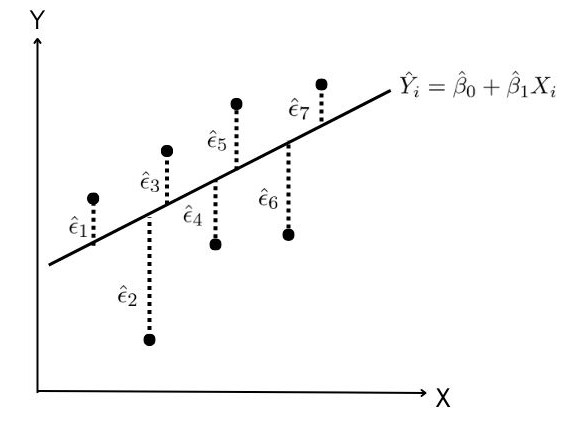

Econometria Introdução
Universidade Estadual da Paraíba
Conteúdo programático
Unidade temática 1
- Conceitos e objetivos da econometria
- Modelos de regressão simples
- Modelos de regressão múltipla
- Modelos log-lin
- Modelos Lineares Generalizados
- Modelo de regressão beta (para dados de proporção)
- Multicolinearidade, heterocedasticidade, especificação dos modelos e ausência de normalidade dos resíduos
Unidade temática 2
- Variáveis Dummy
- Variáveis instrumentais
- Modelos de equações simultâneas
- Econometria de séries temporais: Classe ARIMA, suavização exponencial e modelos ARCH e GARCH
O que é econometria
“A econometria, resultado de determinada perspectiva sobre o papel da economia, consiste na aplicação da estatística matemática a dados econômicos para dar suporte empírico aos modelos formulados pela economia matemática e obter resultados numéricos (TINTNER, 1968)”
“A econometria pode ser definida como a ciência social em que as ferramentas da teoria econômica, da matemática e inferência estatística são aplicadas à análise dos fenômenos econômicos (GOLDBERGER, 1964)”
União de ciências
Com base nessas definições, podemos entender que a econometria é a união entre: Economia, matemática e estatística.
metodologia econômica clássica
Em termos gerais, a metodologia econômica clássica segue os seguintes passos:
Exposição da teoria ou hipótese
Especificação do modelo matemático da teoria
Especificação do modelo estatístico ou econométrico
Coleta dos dados
Estimação dos parâmetros do modelo econométrico (ajuste do modelo)
teste de hipóteses (checar as premissas do modelo e ferramentas de diagnóstico)
Previsão ou predição
Uso do modelo para fins de controle ou de políticas
Relações estatísticas e determinísticas
- Nas relações estatísticas entre variáveis, lidamos essencialmente com variáveis aleatórias ou estocásticas, isto é, variáveis que seguem alguma distribuição de probabilidade.
- Por outro lado, na dependência determinística, também lidamos com variáveis, mas estas não são aleatórias.
Exemplo de relação estocástica
A relação entre o rendimento de uma lavroura em relação à temperatura, pluviosidade, luz solar ou fertilizante é de natureza estatística no sentido de que as variáveis explicativas não permitirão ao agrônomo prever exatamente o rendimento devido aos erros envolvidos na medição dessas variáveis, assim como a diversos outros fatores que coletivamente afetam o rendimento mas de alguma forma não podem ser mensurados.
Relação determinística
Nos fenômenos determinísticos lidamos com relações do tipo apresentado pela Lei da gravidade de Newtton ou outras Leis da Física que possuem uma relação exata.
Regressão versus causalidade
- Embora a análise de regressão lide com a dependência de uma variável em relação a outras, isso não implica necessariamente em causalidade
“Uma relação estatística, por mais forte e sugestiva que seja, nunca pode estabelecer uma conexão causal: nossas ideias de causalidade devem vir de fora da estatística, em última análise, de alguma teoria.” (Kendall e Stuart, 1961)
- Portanto, é importante notar que, uma relação estatística por si própria não implica logicamente em uma causa. Para atribuir causa, devemos recorrer a considerações a priori ou teóricas.
regressão versus correlação
- a análise de correlação, cujo principal objetivo é medir a força ou grau de associação linear entre duas variáveis está estreitamente relacionada à análise de regressão, mas conceitualmente diferente.
- Na análise de regressão, como já mencionamos, não estamos interessados em apenas identificar associações. EM vez disso, buscamos estimar ou prever o valor médio de uma variável com base nos valores fixos de outras variáveis.
Tipos de dados
Séries temporais
- Uma série temporal é um conjunto de observações dos valores que uma variável assume em diferentes momentos de tempo
Escala de tempo
Esses dados podem ser coletados em diferentes escalas de tempo:
- Minutos
- Horas
- Dias
- Semanas
- Meses
- Anos …
Dados de corte transversal
Esses são dados em que uma ou mais variáveis foram coletadas no mesmo ponto do tempo, como por exemplo, o censo demográfico que é feito a cada 10 anos.
\[ \begin{align} \mathbb{Var}[Y \mid x] &= \mathbb{Var}[ \beta_0 + \beta_1 x + \epsilon ] \\ &=\mathbb{Var}[ \beta_0 + \beta_1] x + \mathbb{Var}[\epsilon ] \\ &= 0 + \mathbb{Var}[\epsilon ] \\ &= \sigma^2. \end{align} \]
Portanto, \(Y \sim N( \beta_0 + \beta_1x, \sigma^2 )\). :::
Estimação dos parâmetros do modelo
- Os modelos de regressão linear dependem de parâmetros desconhecidos. Portanto, é necessário estimá-los.
- Duas técnicas podem ser usadas para estimar um modelo de regressão linear:
- Mínimos Quadrados Ordinários (MQO)
- Máxima verossimilhança (MV)
Mínimos Quadrados Ordinários
Ilustração da reta de regressão

Valores preditos de \(Y_i\)
Para estimar os valores da variável resposta \(Y\), usamos a seguinte expressão:
\[ \hat Y_i = \hat\beta_0 + \hat\beta_1X_i \]
em que \(\hat\beta_0\) e \(\hat\beta_1\) são os estimadores para os parâmetros \(\hat\beta_0\) e \(\hat\beta_1\), respectivamente.
Resíduos
A variável resposta \(Y\) pode ser representada como sendo a soma dos valores estimados com os resíduos, ou seja,
\[ Y_i = \hat Y_i + \hat \epsilon_i \]
Isto é, os resíduos é dado por:
\[ \hat\epsilon_i = Y_i - \hat Y_i \]
Soma dos resíduos
É intuitivo dizer que, um modelo bem ajustado é aquele que possui a soma de todos os resíduos sendo a menor possível. Isto é, a soma dos resíduos pode ser encontrada pela seguinte expressão:
\[ \sum_{i=1}^{n} \hat\epsilon_i = \sum_{i=1}^{n} (Y_i - \hat Y_i) = \sum_{i=1}^{n} (Y_i - \hat\beta_0 - \hat\beta_1X_i ) \]
Entretanto, a equação acima possui um grande problema !!!
Por exemplo, considere que os resíduos \(\epsilon_1 = 10\), \(\epsilon_2 = 5\), \(\epsilon_3 = 2\), \(\epsilon_4 = -5\), \(\epsilon_5 = -10\) e \(\epsilon_6 = -2\).
Soma dos resíduos ao quadrado
Para corrigir o problema da soma dos resíduos, podemos elevar ao quadrado os resíduos e somá-los. Assim, temos a medida soma dos resíduos ao quadrado dada por:
\[ \sum_{i=1}^{n} \hat\epsilon_i^2 = \sum_{i=1}^{n} (Y_i - \hat Y_i)^2 = \sum_{i=1}^{n} (Y_i - \hat\beta_0 - \hat\beta_1X_i )^2 \]
Dada a equação acima, os valores de \(\beta_0\) e \(\beta_1\) são escolhidos de forma que minimizem a soma dos resíduos.
Como achar pontos de mínimo e máximo de uma função
Se uma função ( f(x) ) for diferenciável, seguimos estes passos:
- Derivar a função: ( f’(x) ).
- Encontrar pontos críticos resolvendo analiticamente ( f’(x) = 0 ).
- Classificar os pontos críticos:
- Se ( f’’(x) > 0 ), é um mínimo local.
- Se ( f’’(x) < 0 ), é um máximo local.
- Se ( f’’(x) = 0 ), pode ser um ponto de inflexão (precisa de mais análise).
Estimadores de Mínimos quadrados para \(\beta_0\) e \(\beta_1\).
Para encontrar os estimadores de MQO dos parâmetros \(\beta_0\) e \(\beta_1\) vamos minimizar a soma dos resíduos ao quadrado. Para isto, precisamos derivar a soma dos resíduos ao quadrado:
\[ \frac{\partial}{\partial \beta_0}\sum_{i=1}^{n} (Y_i - \beta_0 - \beta_1X_i )^2 = 0 \\ \Rightarrow \hat \beta_0 = \overline Y - \hat\beta_1\overline X \]
e
\[ \frac{\partial}{\partial \beta_1}\sum_{i=1}^{n} (Y_i - \beta_0 - \beta_1X_i )^2 = 0 \\ \Rightarrow \hat \beta_1 = \frac{ \sum_{i=1}^{n} (X_i - \overline X)(Y_i - \overline Y) }{\sum_{i=1}^{n} (X_i - \overline X)^2} \]
Propriedades dos Estimadores de MQO na Regressão Linear Simples
- Não Viesado
- Os estimadores ( \(\hat{\beta}_0\) ) e ( \(\hat{\beta}_1\) ) são não viesados, ou seja, ( \(E[\hat{\beta}_0] = \beta_0\) ) e ( \(E[\hat{\beta}_1] = \beta_1\) ).
- Eficiência
- Os estimadores ( \(\hat{\beta}_0\) ) e ( \(\hat{\beta}_1\) ) são eficientes entre os estimadores lineares não viesados. Isso significa que eles têm a menor variância possível de todos os estimadores lineares não viesados, sob a suposição de homocedasticidade e erros i.i.d.
- Consistência
- Os estimadores são consistentes, ou seja, conforme o tamanho da amostra ( n ) cresce para o infinito, os estimadores ( \(\hat{\beta}_0\) ) e ( \(\hat{\beta}_1\) ) convergem para os valores verdadeiros ( \(\beta_0\) ) e ( \(\beta_1\) ).
- Invariância sob Transformações Lineares
- Se a variável ( y ) for transformada por uma transformação linear, o estimador de MQO para o parâmetro será alterado de forma consistente. Por exemplo, se ( \(y_i\) ) for multiplicado por uma constante ( c ), o estimador ( \(\hat{\beta}_1\) ) será multiplicado por ( c ).
- Mínimos Quadrados
- O estimador de MQO minimiza a soma dos quadrados dos resíduos
- Independência dos Resíduos
- O modelo assume que os resíduos ( \(\epsilon_i\) ) são independentes e identicamente distribuídos (i.i.d.), com média zero e variância constante.
Modelo de regressão linear múltipla
O modelo de regressão linear múltipla é definido pela seguinte expressão:
\[ Y_i = \beta_0 + \beta_1X_1 + \cdots + \beta_pX_p + \epsilon_i, \]
em que \(\beta_0, \beta_1, \ldots, \beta_p\) são os parâmetros desconhecidos da regressão \(X_1, \ldots, X_p\) são as covariáveis ou variáveis explicativas e \(\epsilon_i\) é um erro aleatório e \(i = 1, \ldots,n\).
Suposições do erro:
- \(\mathbb{E}(\epsilon_i) = 0\) e \(\text{Var}(\epsilon_i) = \sigma^2\), para todo \(i\) e \(0 < \sigma^2 < \infty\).
- \(\text{Cov}( \epsilon_i, \epsilon_s ) = 0, \forall i \neq s\).
- \(\epsilon_i\) tem distribuição normal.
Quando as suposições são violadas. Então, é recomendado usar outra distribuição mais adequada aos dados.